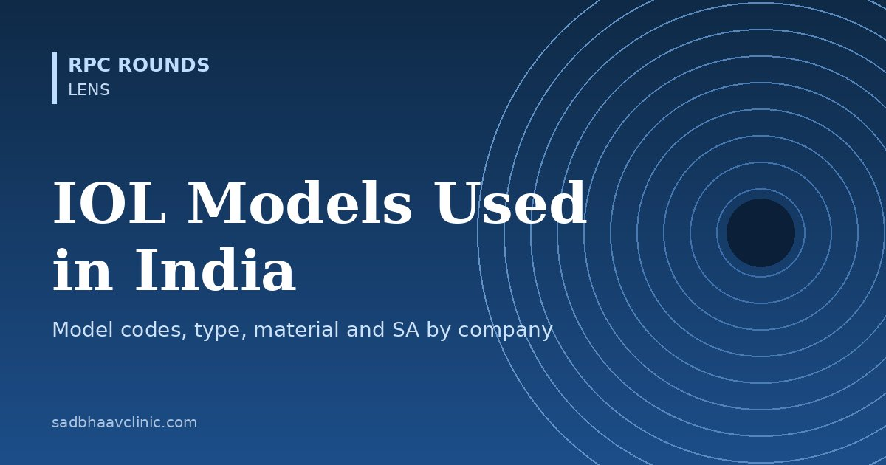

For: PG residents · Practising ophthalmologists
Last updated: November 2026
Key points in 60 seconds
"Which lens is RAO100C?" "Is SN60WF the yellow one?" "Which Tecnis is preloaded?" When a biometry printout, an IOL sticker or a referral letter names a lens by its code, residents often cannot tell what lens it is. This page lists the common IOL models used in India by company, with their type, material and spherical aberration design. Rayner details are checked against Rayner's own brochure and Alcon codes against Alcon's coding list; entries marked * should be confirmed against the current catalogue.
All RayOne lenses are on the same platform and are supplied preloaded. Note that RAO100C is the RayOne Spheric; the RayOne Aspheric is RAO600C.
| Lens | Model | Type | Material | SA design |
|---|---|---|---|---|
| RayOne Spheric | RAO100C | Monofocal | Hydrophilic acrylic | Spheric (no aspheric correction) |
| RayOne Aspheric | RAO600C | Monofocal | Hydrophilic acrylic | Aberration-neutral |
| RayOne Toric | RAO610T | Monofocal toric (standard cylinder +1.0 to +6.0 D) | Hydrophilic acrylic | Aberration-neutral |
| RayOne Hydrophobic Aspheric | RAO800C | Monofocal | Hydrophobic acrylic | Aberration-neutral |
| RayOne Hydrophobic Aspheric BLF | RAO850B | Monofocal, blue-light filtering | Hydrophobic acrylic | Aberration-neutral |
| RayOne EMV | RAO200E | Enhanced monofocal | Hydrophilic acrylic | Positive SA by design (extends depth of focus) |
| RayOne EMV Toric | RAO210T | Enhanced monofocal toric | Hydrophilic acrylic | Positive SA by design |
| RayOne Galaxy | RAO605G | Non-diffractive spiral (full range of vision) | Hydrophilic acrylic | Aberration-correcting |
| RayOne Galaxy Toric | RAO615X | Spiral toric | Hydrophilic acrylic | Aberration-correcting |
| RayOne Trifocal | RAO603F | Diffractive trifocal | Hydrophilic acrylic | Aberration-neutral |
| RayOne Trifocal Toric | RAO613Z | Trifocal toric | Hydrophilic acrylic | Aberration-neutral |
| Sulcoflex Aspheric / Toric / Trifocal | IOL700L / IOL710T / IOL703F | Supplementary (piggyback) lens for the sulcus | Hydrophilic acrylic | Aberration-neutral (aspheric, trifocal) |
Alcon AcrySof codes follow a pattern: S = single-piece, M = three-piece; A = clear acrylic, N = "Natural" (blue-light filtering, yellow); AT = spheric optic, WF = aspheric ("wavefront") optic. So SN60WF is a single-piece, yellow, aspheric AcrySof IQ, and SA60AT is a single-piece, clear, spheric AcrySof.
| Lens | Model | Type | Material | SA design |
|---|---|---|---|---|
| AcrySof IQ | SN60WF (preloaded AU00T0) | Aspheric monofocal, single-piece, blue-light filtering | Hydrophobic acrylic | Negative (about −0.20 µm) |
| AcrySof IQ (clear) | SA60WF * | Aspheric monofocal, single-piece | Hydrophobic acrylic | Negative |
| AcrySof Natural | SN60AT | Spheric monofocal, single-piece, blue-light filtering | Hydrophobic acrylic | Spheric (positive) |
| AcrySof (clear) | SA60AT | Spheric monofocal, single-piece | Hydrophobic acrylic | Spheric (positive) |
| AcrySof three-piece | MA60AC (clear), MN60AC (Natural) | Three-piece monofocal; useful for the sulcus | Hydrophobic acrylic optic, PMMA haptics | Spheric |
| AcrySof IQ Toric | SN6AT2 to SN6AT9 | Toric | Hydrophobic acrylic | Negative |
| Clareon | CNA0T0 | Aspheric monofocal | Hydrophobic acrylic (glistening-free material) | Negative |
| Clareon Toric | CNW0T3 to CNW0T9 (also CNA0T3 to CNA0T9) | Toric | Hydrophobic acrylic | Negative |
| AcrySof IQ Vivity | DFT015 (toric DFT315 to DFT615) | EDOF, non-diffractive | Hydrophobic acrylic | Wavefront-shaping |
| Clareon Vivity | CNWET0 (toric CNWET3 to CNWET6) | EDOF, non-diffractive | Hydrophobic acrylic | Wavefront-shaping |
| AcrySof IQ PanOptix | TFNT00 (toric TFNT30 to TFNT60) | Diffractive trifocal | Hydrophobic acrylic | Negative |
| Clareon PanOptix | CNWTT0 (toric CNWTT3 to CNWTT6) | Diffractive trifocal | Hydrophobic acrylic | Negative |
| Lens | Model | Type | SA design |
|---|---|---|---|
| Tecnis 1-Piece | ZCB00 * | Aspheric monofocal | Negative (−0.27 µm, matching the average cornea) |
| Tecnis Eyhance | ICB00 (preloaded DIB00) * | Enhanced monofocal | Negative (−0.27 µm) with a higher-order aspheric centre |
| Tecnis Toric II | ZCU series * | Toric | Negative (−0.27 µm) |
| Tecnis Eyhance Toric II | DIU series * | Enhanced monofocal toric | Negative (−0.27 µm) |
| Tecnis Symfony | ZXR00 (toric ZXT series) * | EDOF, diffractive echelette | Negative, with chromatic aberration correction |
| Tecnis Synergy | DFR00V * | Diffractive, continuous range of vision | Negative |
| Company | Lens | Model | Type |
|---|---|---|---|
| Zeiss | CT Lucia | 611P * | Aspheric monofocal (negative SA) |
| Zeiss | CT Asphina | 409MP * | Aspheric monofocal, hydrophilic |
| Zeiss | AT Torbi | 709M * | Toric, hydrophilic |
| Zeiss | AT Lisa tri (toric) | 839MP (939MP) * | Diffractive trifocal |
| Zeiss | AT Lara | 829MP * | EDOF |
| Bausch + Lomb | enVista | MX60 * | Hydrophobic, aberration-free monofocal |
| Bausch + Lomb | enVista Toric | MX60T * | Toric |
| Bausch + Lomb | Akreos | AO60, MI60 * | Hydrophilic, aberration-free monofocal |
| Hoya | Vivinex | XY1 (iSert preloaded), XC1 (multiSert) * | Hydrophobic aspheric monofocal |
| Hoya | iSert | 251 * | Preloaded aspheric monofocal |
| Hoya | NANEX | Confirm code * | Monofocal |
Aurolab and Appasamy list lenses by product name on their websites, without model numbers or A-constants. Confirm both with the company representative and the package insert.
| Company | Lens | Type |
|---|---|---|
| Aurolab | Aurovue | Hydrophobic single-piece monofocal |
| Aurolab | Auroflex | Aspheric, introduces no spherical aberration |
| Aurolab | Auroflex EV | Aspheric, SA −0.15 µm |
| Aurolab | EV / EVPL | Hydrophobic aspheric, preloaded, negative SA |
| Aurolab | EV Gold | UV-A and blue-light filtering |
| Aurolab | Auroflex Toric and other torics | Toric |
| Aurolab | Multipiece | Hydrophobic optic with PMMA haptics |
| Aurolab | Dfine | Diffractive multifocal, +3 D add, preloaded |
| Aurolab | Vivid | Continuous range of focus |
| Appasamy | SupraPhob | Hydrophobic, preloaded |
| Appasamy | SwissPhob | Aspheric |
| Appasamy | SupraPhob Toric | Toric |
| Appasamy | SupraPhob Regen | Diffractive-refractive multifocal |
| Appasamy | SupraPhob Regen T, Multi Diff Trifit | Trifocal |
| Appasamy | SupraPhob Infocus | EDOF |
Other Indian brands are widely used, especially in camps and government programmes. They are not listed here because their model codes could not be verified.
| Situation | Corneal SA | Usual IOL choice |
|---|---|---|
| Normal cornea | About +0.27 µm (6 mm pupil) | Negative-SA aspheric lens gives better contrast; aberration-neutral is also fine |
| After myopic LASIK or PRK | Increased positive SA | Negative-SA lens (for example Tecnis ZCB00); avoid spheric lenses |
| After hyperopic LASIK | Reduced or negative SA | Aberration-neutral lens; avoid strongly negative-SA lenses |
| Keratoconus | Often negative (cone apex) and irregular | Aberration-neutral lens; toric only if the cornea is stable and regular centrally |
| Risk of decentration (weak zonules, pseudoexfoliation, sulcus placement) | Any | Aberration-neutral lens is more forgiving than a strongly negative-SA lens |
| Small pupil, camp surgery, budget package | Any | Spheric or aberration-neutral lens; asphericity matters less with small pupils |
Example from practice: a post-myopic-LASIK patient's Barrett printout listed RAO100C. That is the RayOne Spheric, which adds positive SA to a cornea that already has too much. The RAO600C (aberration-neutral) or a negative-SA lens such as the Tecnis ZCB00 is the better choice.
This page deliberately does not list A-constants. They differ between biometers, formulas and lens versions, and manufacturer values are only starting estimates. Use the value on the current lens label, an optimised constant from IOLCon, or your own personalised constant. See the A-constant reference for where to find them.
* Confirm against the current catalogue or package insert. Models and codes change, and availability in India varies. Corrections are welcome by email to drdpatel87@gmail.com.
Pearls
Common mistakes
Related: IOL A-Constant Reference by Brand, IOL Injectors and Cartridges for Residents: Alcon A, B, C, D, Preloaded Systems, J&J Unfolder, Zeiss, Medicel and Indian Lenses, Post-Refractive Surgery IOL Calculation: A Practical Guide, SRK II, SRK/T, Hoffer Q & Holladay 1 Compared, IOL Lens Types Explained: Monofocal to Trifocal.
📘 Want more exam-ready material? See Most Commons in Ophthalmology on Kindle, or browse all my books.
How to cite this page
Patel D. IOL Models Used in India: Model Codes, Lens Type, Material and Spherical Aberration by Company. RPC Rounds (Sadbhaav Eye Clinic). Updated November 2026. Available at: https://www.sadbhaavclinic.com/iol-models-india-quick-reference.html. Accessed [date].
Looking for an eye specialist in Ahmedabad? Patient guide: IOL lens types explained or book a consultation with Dr. Dhaval Patel.